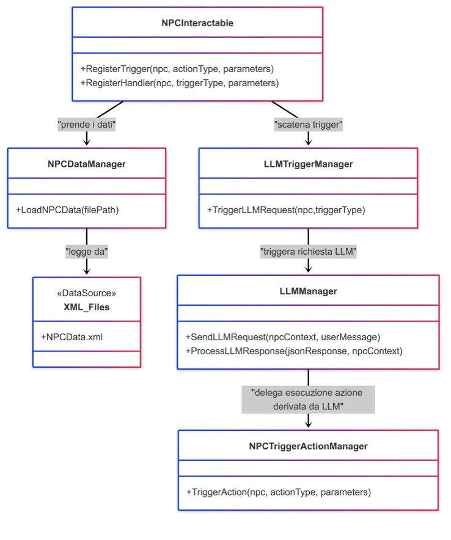
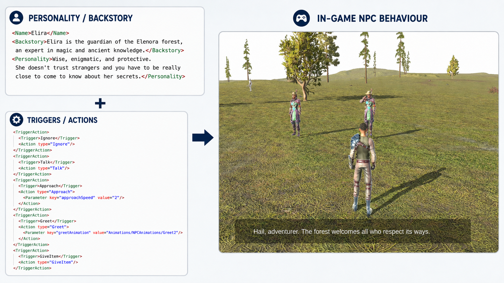
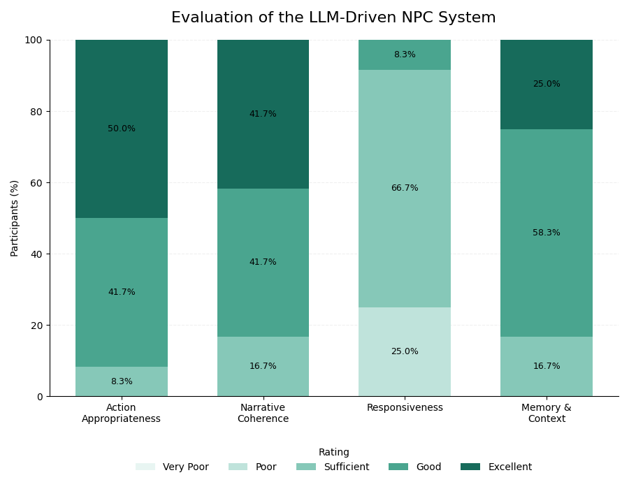

Combat & Attacks
Configurable attack types and combo-composition rules designed to keep gameplay tuning outside the core implementation wherever possible.
Nicola De Lillo · Gameplay / Technical Programmer
Computer Engineer focused on gameplay programming, technical design and game AI. My main project, Reve, is a Unity/C# Action RPG prototype built around data-driven gameplay systems and an LLM-based architecture that turns player interactions and game events into controllable NPC behaviours.
Featured Project
A third-person fantasy Action RPG prototype for PC, developed in Unity by a team of 2 people, me and Ruben Gigante, MSc, used as the foundation for my Master's thesis on LLM-driven NPC behaviour.
Academic game-development project with both individual and collaborative contributions. The damage system and damage-formula work were developed collaboratively with another team member and friend, Ruben Gigante.
Modular gameplay architecture with external XML configuration and runtime integration of local Large Language Models.
The project was designed around rapid iteration, explicit system boundaries and the separation of gameplay content from implementation logic.
Configurable attack types and combo-composition rules designed to keep gameplay tuning outside the core implementation wherever possible.
Weapons, armour and consumable items influence player statistics and can be defined through external data rather than hard-coded variants.
Active and passive abilities with externally configurable types, modifiers and activation constraints.
Multiple merchants can be configured with different inventories, supporting equipment and consumable-item workflows.
NPC personality, backstory, available items, triggers and behavioural configuration are defined through external data.
Damage formulas and damage-type behaviour were developed collaboratively with another team member and integrated into the wider data-driven gameplay architecture.
Technical Design
A central design goal was to separate gameplay content from implementation logic so that systems could be iterated without constantly modifying source code.
Gameplay definitions such as NPC characteristics, items, abilities, attack rules, player statistics, merchant inventories and other configuration can be stored externally and loaded at runtime.
This reduces coupling between content iteration and programming work: designers can adjust parameters and combinations while programmers focus on reusable underlying systems.

Game AI / Master's Thesis
The thesis extension explores how a language model can participate in real-time gameplay while preserving explicit, controllable game actions.

A player interaction or contextual game event activates the system.
NPC personality, backstory, memory and current game context are assembled.
The model produces constrained JSON containing dialogue and an intended action.
The response is mapped to explicit, reusable gameplay behaviours.
Unity executes the resulting movement, dialogue, item or social reaction.
Use short clips rather than long demonstrations. Each clip should communicate one behaviour in a few seconds.
Keeps the model's free-form generation separated from the finite set of gameplay actions the engine is allowed to execute.
Behaviour implementations share a common action contract, making new actions easier to introduce without rewriting the orchestration layer.
Each character maintains its own interaction history to support coherent, contextual responses.
Local LLM requests are isolated from Unity's main gameplay loop so model inference does not synchronously block the main thread.
GPT4All and a locally hosted quantized model were used to explore offline inference, data control and predictable integration.

Technical Design
The goal was not to give an LLM unrestricted control of an NPC. The system separates generative decision making from explicitly implemented gameplay actions and external configuration.
Personality, backstory, triggers, parameters and allowed behaviours.
The model reasons within the current context and returns structured intent.
Only predefined gameplay actions are resolved and executed inside Unity.

Evaluation
The NPC system was evaluated with 12 participants using four dimensions: action appropriateness, narrative coherence, responsiveness and memory/context.
Participants rating the system as good or excellent.
Participants rating narrative consistency as good or excellent.
Participants rating contextual memory as good or excellent.
The main limitation identified during testing and the clearest target for future work.

Reflection
A portfolio is stronger when it explains limitations and engineering trade-offs, not only successful features.
Local LLM inference introduced response times of roughly 2–3 seconds, acceptable for some dialogue interactions but unsuitable for highly reactive gameplay.
A production-oriented iteration could combine deterministic systems for time-critical behaviour with LLM reasoning for higher-level decisions, dialogue and contextual adaptation.
Lighter models, response caching and more aggressive context management would be immediate candidates for reducing inference cost and latency.
More sophisticated validation, fallback rules and authoring tools would further reduce the risk of unexpected or narratively inappropriate model behaviour.